Enam layar sudah dibangun dari mockup yang Anda setujui. Tiap layar
punya gambar layar besar (laptop) dan layar ponsel. Pilih Setujui,
atau Ubah dan tulis apa yang perlu diganti.
6 layar2 ukuran: laptop dan ponseldata contoh, bukan data asli
1. Pulihkan tenant atau outlet (Platform)
Tenant yang diarsip atau outlet yang ditutup bisa dipulihkan dalam 30
hari. Super Admin meninjau dulu, lalu menulis alasan pemulihan.
Tampilan saat ini
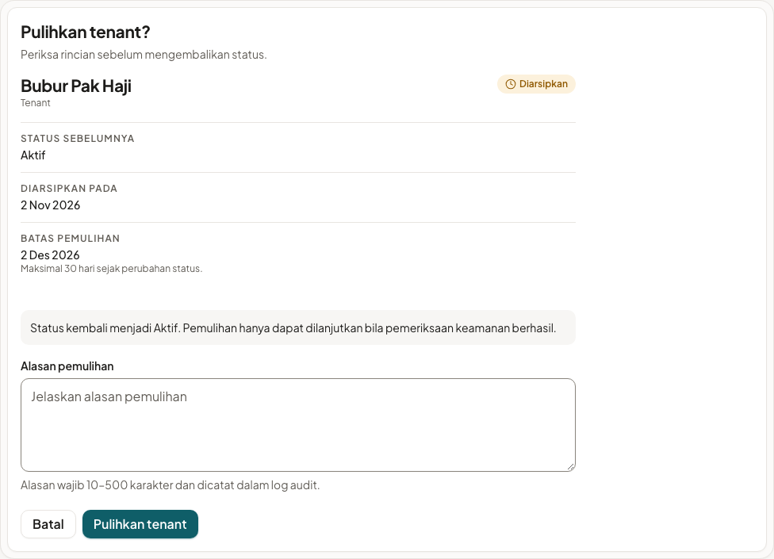
Laptop: konfirmasi pemulihan
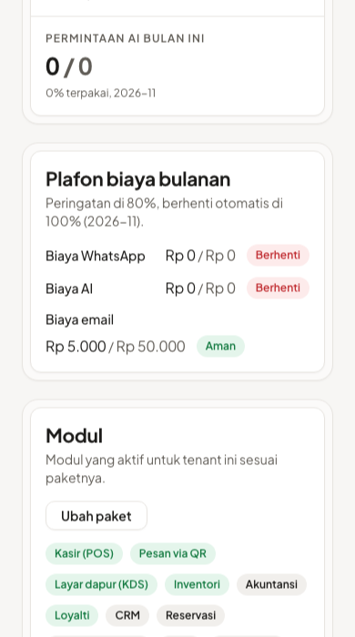
Ponsel: pemulihan berhasil
Beda dari mockup: panel pemulihan tampil langsung di halaman
tenant, tanpa tab. Pemulihan outlet milik tenant lain belum bisa, karena
sistem belum bisa membaca daftar outlet tenant lain.
SetujuiUbahTulis yang perlu diganti di kotak catatan.
2. Tetapkan atau ganti Owner tenant (Platform)
Super Admin menetapkan Owner untuk tenant baru, atau mengganti Owner.
Wajib alasan dan kode keamanan.
Tampilan saat ini
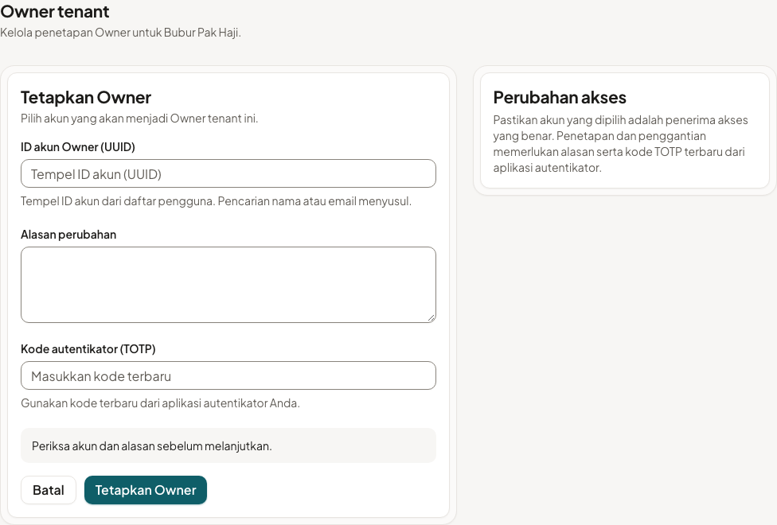
Laptop: tetapkan Owner
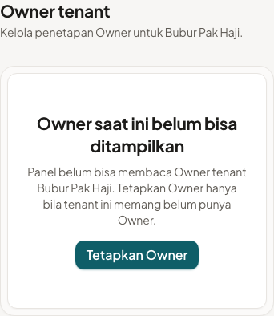
Ponsel: panel Owner
Beda dari mockup: sistem belum bisa menampilkan Owner yang
sekarang dan belum bisa mencari akun lewat nama atau email. Untuk
sementara, Super Admin menempel ID akun. Tombol Ganti Owner hanya muncul
tepat setelah Owner ditetapkan. Fitur lengkapnya menunggu satu pekerjaan
backend.
SetujuiDengan batas sementara di atas.UbahTulis yang perlu diganti di kotak catatan.
3. Domain sendiri (Pengaturan)
Pemilik bisnis menambahkan domain sendiri, menyalin kode verifikasi ke
pengaturan domainnya, lalu menekan Cek verifikasi.
Tampilan saat ini
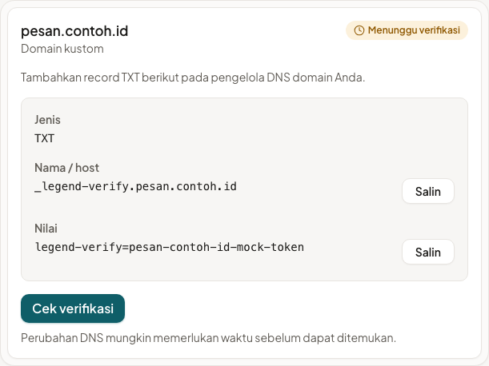
Laptop: domain menunggu verifikasi
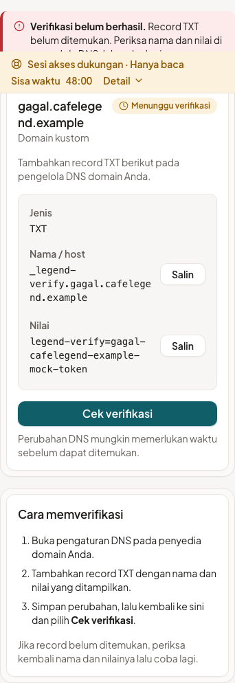
Ponsel: verifikasi belum berhasil
Sesuai mockup. Halaman ini bisa dibuka lewat menu Domain. Tautan
dari halaman Pengaturan menyusul bersama review layar pengaturan
berikutnya.
SetujuiUbahTulis yang perlu diganti di kotak catatan.
4. Kode cadangan keamanan (Akun)
Setelah memasang aplikasi kode keamanan, pengguna mendapat 10 kode
cadangan. Kode ini hanya tampil sekali. Saat ponsel hilang, pengguna
masuk dengan satu kode cadangan.
Tampilan saat ini
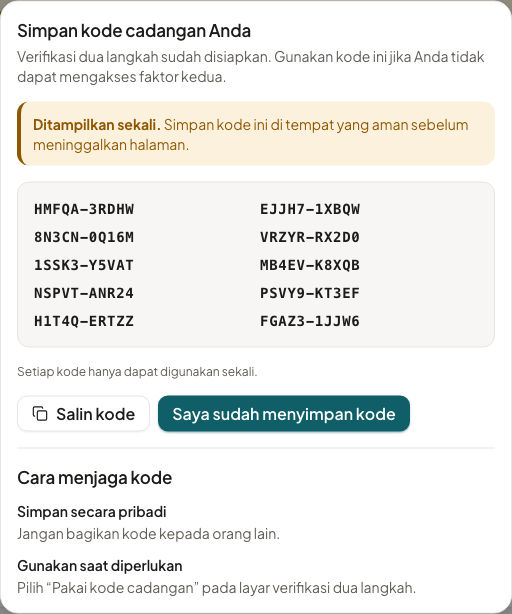
Laptop: kode cadangan baru
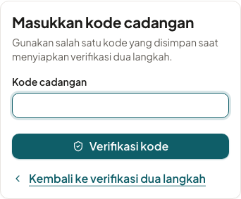
Ponsel: masuk dengan kode cadangan
Beda dari mockup: bila pembuatan kode gagal, ada tombol "Lewati,
buat nanti di Keamanan" supaya pengguna tidak terjebak. Pengguna tanpa
aplikasi kode keamanan melihat satu baris pemberitahuan, bukan halaman
penuh. Saat sisa kode tinggal sedikit, muncul peringatan.
SetujuiUbahTulis yang perlu diganti di kotak catatan.
5. Satuan barang (Inventori)
Tim inventori menambah satuan baru dan mengubah nama satuan. Satuan
bawaan sistem terkunci.
Tampilan saat ini
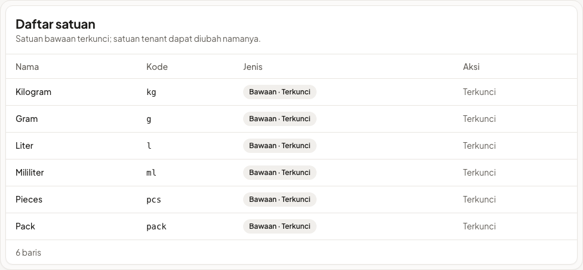
Laptop: daftar satuan
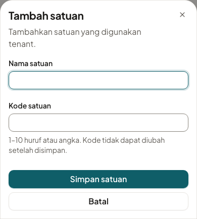
Ponsel: tambah satuan
Beda dari mockup: di ponsel, form tambah satuan muncul sebagai
jendela di tengah, bukan lembar dari bawah layar.
SetujuiUbahTulis yang perlu diganti di kotak catatan.
6. Pemetaan akun per peran (Akuntansi)
Tim keuangan memilih akun untuk tiap peran (kas, pendapatan, pajak,
biaya layanan, dan lainnya) per badan usaha, supaya jurnal otomatis
masuk ke akun yang benar.
Tampilan saat ini
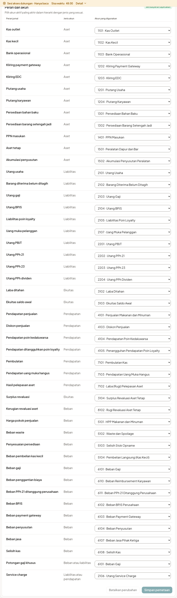
Laptop: pemetaan akun
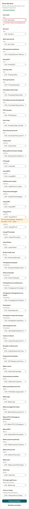
Ponsel: akun yang tidak cocok ditandai
Beda dari mockup: untuk peran biaya layanan, pilihan akun
dibatasi ke akun kewajiban atau pendapatan, bukan semua jenis akun.
Aturan ini mengikuti sistem pembukuan, supaya jurnal tidak salah tempat.
SetujuiUbahTulis yang perlu diganti di kotak catatan.